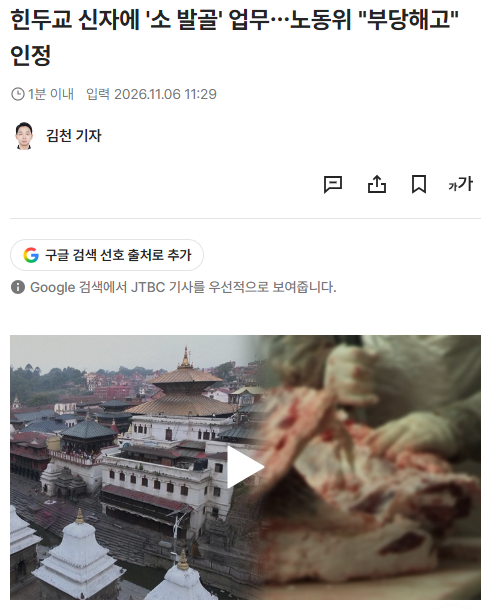
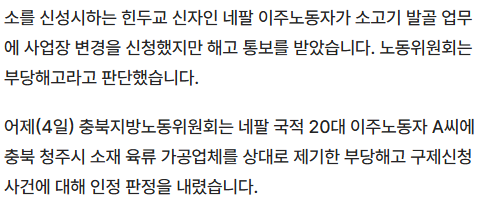

https://news.jtbc.co.kr/article/NB12326800
근로계약서에 네팔어로 냉동 포장 업무라고 적혀 있는 거 보고 작성하고 입국했는데 나중에 보니 한국어로는 소 발골로 되어있었다고.
억지로 일 하다가 도저히 못하겠어서 근무지 바꾸게 해달라 했지만 회사에서 씹어버리고 부당하게 짤라버렸다는 내용


https://news.jtbc.co.kr/article/NB12326800
근로계약서에 네팔어로 냉동 포장 업무라고 적혀 있는 거 보고 작성하고 입국했는데 나중에 보니 한국어로는 소 발골로 되어있었다고.
억지로 일 하다가 도저히 못하겠어서 근무지 바꾸게 해달라 했지만 회사에서 씹어버리고 부당하게 짤라버렸다는 내용
근데 저런거 하나씩 인정해주면 나중에
뭔 되도않는 개소리냐
말을 끝까지 해
나중에 인권을 더 존중하는 사회로 갈수 있음
저건 업체측에서 업무내용을 속인거라 저게 맞는 판결이야
냉동 포장 업무로 계약했는데 소 발골 업무 맡겼음 취업 사기 아니냐.
종교문제는 부차적인거고 ㅋㅋ
사무직이라고 해서 계약해서 들어갔는데 현장을 알아야지 사무직을 하제~ 하면서 현장직 시키는거랑 뭐가다른데 ㅋㅋㅋㅋㅋㅋ 당연히 부당해고지
그냥 요즘엔 종교만 얽히면 무지성이 돼 버리는 애들이 많구마
이런새끼들특
택배회사 개발자나 내근직으로 입사했다가
물류일 투입되면 개지랄함
이건 ㅅㅂ ㅋㅋㅋ
아니 저게 맞긴한데 애초에 힌두교신자가 육류가공업체에 취직을 왜 한거지?
소고기쪽말고 돼지고기파트 이런쪽으로 빼주기로하고 취직했는데 저런거면 인정
냉동 포장 업무라고 써있어서 갔는데 발골시키면 한국인도 바로 지랄할것같은데
좀 읽어라
냉동 포장 업무라 해서 지원했다 잖음
글 좀
글도 못읽는 저능아들 만선 냉동 포장 업무니까 육류가공업체여도 취직한거지 그럼 ㅋㅋㅋ
이건 좀 ㅋㅋ
포장이랑 발골은 난이도부터 조온나 차이나는데 취업사기지 저건 ㅋㅋㅋ
그걸 참고 한 것만 해도 대단하다 ㅋㅋㅋ
저건 시발 취업사기잖아
저런새끼들 대가리 다꺠야함
포장이랑 발골은 아예 다른 직무자너 취업사기 수준 아님?
이건 힌두교를 떠나서 취업사기
한국인이어도 포장 보고 들어갔는데 발골하라고하면 욕할거같은데?
ㅋㅋ근데 한국회사가 다 그렇지 뭐. 기계팀이 페인트도 칠하고 ㅋㅋ뭐 사무도시간나면 작업하러가고 ㅋㅋ놀랍긴해
인도 식당에서 네팔 사람들이랑 일하는데
명절이 있어도 염소 고기를 먹지
소고기는 절대 안 먹더라
삼겹살, 뼈해장국은 좋아한다는데
돼지고기 안먹는건 이슬람
왜냐 돼지는 더러우니까 : 이란, 사우디, 팔레스타인 등등
종교 내용: 무하마드, 쿠란, 알라, 히잡
아브라함계통 유일신종교
소고기 안먹는건 힌두교 왜냐 소는 신성하니까
인도나 근방에 국가들
종교 내용: 차크라, 카르마, 만트라, 아수라 등등
인더스 문명에 다신교
발골은 기술이 필요한 일종의 숙련업무임 칼들고 하는거고
포장은 그냥 동네백수, 아줌마 아무나 할수있는 일임
노임 단가도 달라
한국인이 취업했어도 업장 엎어버리고 나올일인데
발골은 전문직이야...
종교를 떠나서 저건 취업사기잖아…
힌두교가 아니어도 취업사기잖아
입국 전 작성한 근로계약서에는 네팔어로 '냉동·포장 업무'라고 기재돼 있었지만 한글로는 '소 정선 업무'라고 적혀 있었습니다.
아, 이건 좀...
발골을 일반인이 해도 됨? ㅋㅋㅋㅋ
이건 시바 취업 사기 아니냐
억지혐오 시발 갈통새끼들아 글좀읽어라 본문 얼마나 길다고 ㅋㅋㅋㅋㅋㅋㅋ
이건 시발 한국인도 지랄할 건수인데 또 종교하나에 꽂혀가지고
본문에 간략한 설명까지 적어놨는데도 종교에만 꽂혀서 댓글에 헛소리 적는 능지터진 인간들이 한둘이 아녀.
뭔가 신자가 잘못했나 했더니 회사가 병신이자나
힌두교 신자 아니여도 냉동포장이랑 발골은 시발 ㅋㅋㅋㅋㅋㅋㅋㅋㅋㅋㅋㅋㅋ
네팔어에는 소고기포장 및 냉동업무 라고 쓰였네.
종교 때문이면 소고기업체 근로계약을 안했어야 하지 싶은데.
계약후 종교사유로 업체변경 악용가능성이 높아서 꽤 애매하다.
그리고 발골이 꽤 까다로워서 초짜외노자 고용안할텐데 신기하네. 뉴스영상보니 체격도 애매호리한데
악용가능성을 논하기엔 힌두교 얘기는 그냥 부가적인거임
발골을 왜 아무나한테 시켜
ㄹㅇ 내가 알기로 꽤 까다로워서
체격이랑 숙련도 보는데 갑자기 네팔사람을 앉히려나?
뉴스에서 발골이 고리 메달어놓은거 헤체인지
부위별 단순분리절단후 포장인지 모르겠으
발골은 기술아니냐 ㅋㅋㅋㅋ 백종원도 직접은 제대러 못하던디
이건 업체가 씹새끼네